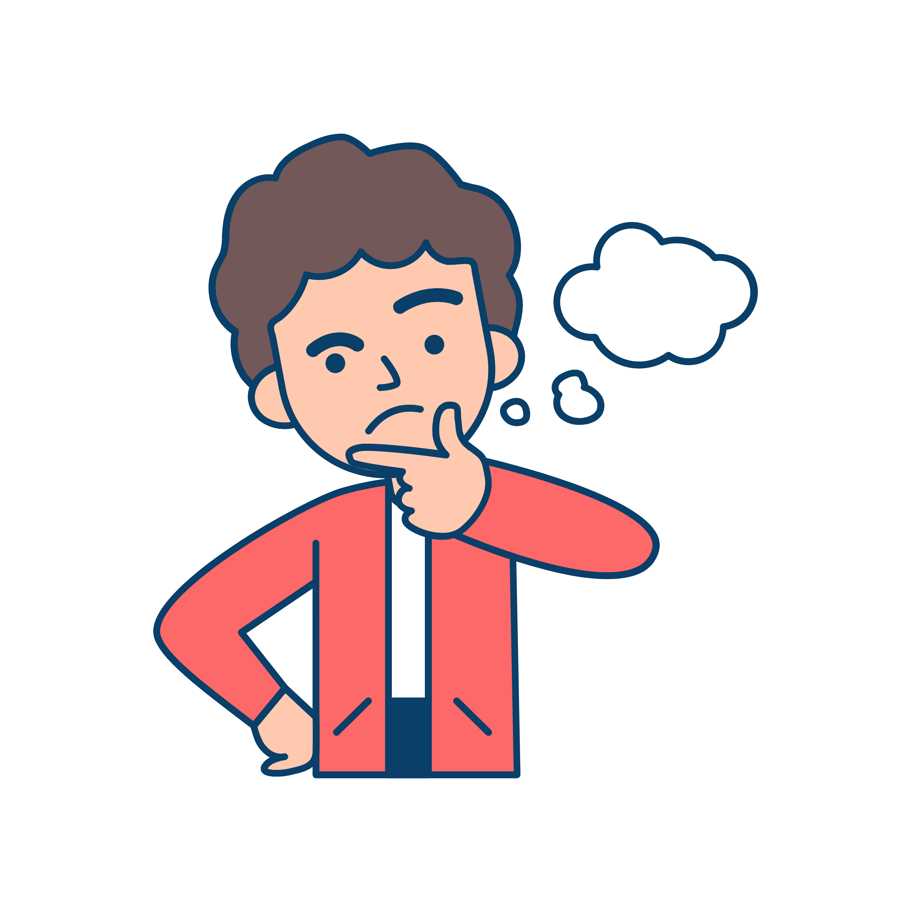
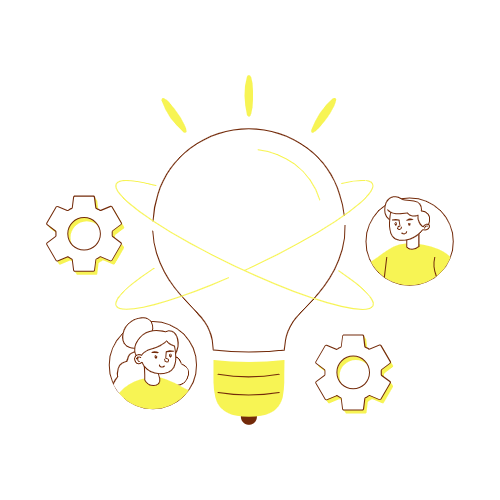
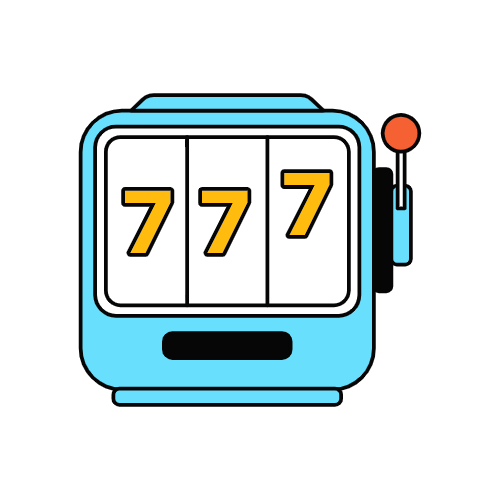
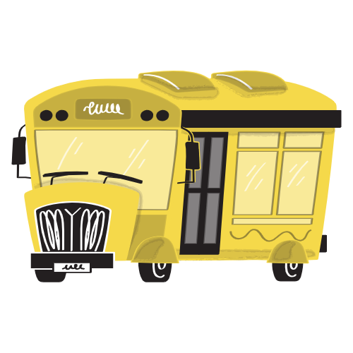
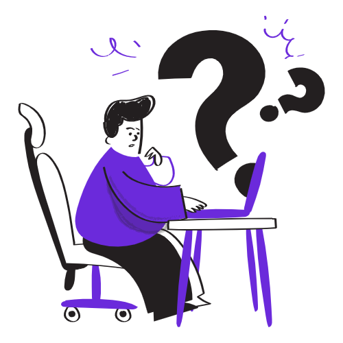
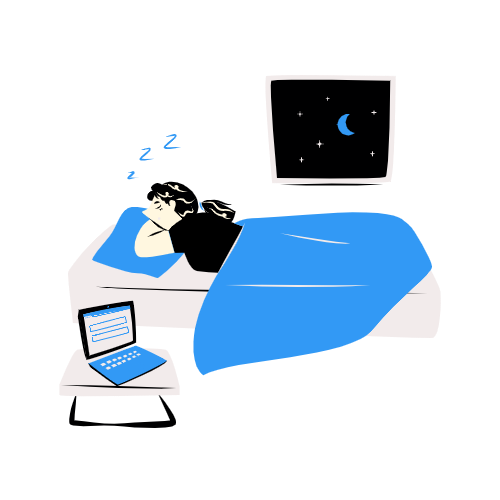

不只是看问题，是一整套思维训练体系
"一个男人走进酒吧要水，酒保拿枪指着他，他说谢谢就走了。为什么？"
海龟汤、谜语人、猜数字……多种推理游戏模式，让你在解谜中锻炼逻辑思维和逆向推理能力。
5种思维维度 × 5种生活场景 = 25种组合。从「如果…会怎样」到「反过来想」，每个问题都针对一种特定思维能力。

"如果明天你的职业被 AI 完全取代了，你会做什么？"

三个随机词语碰撞，激发意想不到的灵感
灵感老虎机随机组合词语激发创意，还有文笔挑战等你来战——用最少的字描述最复杂的场景，锻炼你的文字表达力。
从心理学效应到认知偏差，从哲学思辨到科学冷知识——用轻松有趣的方式，拓展你的知识边界。
用好奇的眼光，探索世界的运行逻辑
时间线记录每一次深度思考，统计你的思维偏好和成长轨迹。一个月后回看，你会惊讶于自己的变化。
不需要大块时间，碎片化场景也能深度思考

地铁上20分钟，与其刷短视频，不如回答一个深度问题。到站时，你的大脑已经完成了一次训练。

写方案没灵感、解决问题没头绪时，拉一下灵感老虎机。三个随机词语的碰撞，常常打开新思路。

每天记录自己的思考，一个月后回看成长轨迹。你会发现自己思维的盲区和进化路径。